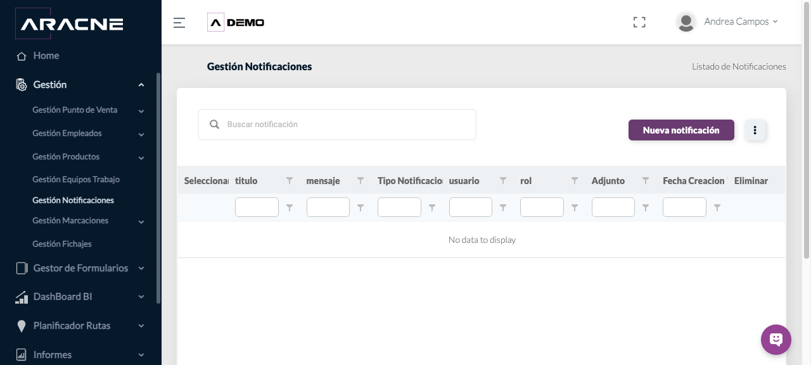

Back Office
Notificaciones
Preparar comunicaciones dirigidas a usuarios o roles.
Requisitos
Destinatarios con perfiles activos.
Dónde estáGestión › Gestión Notificaciones
Procedimiento
- Abre Nueva notificación.
- Escribe título y mensaje.
- Selecciona tipo de notificación y destinatarios por usuario o rol.
- Adjunta un archivo solo cuando sea necesario.
- Envía y revisa la entrada en el listado.
Campos y controles
- Título y mensaje: contenido visible al destinatario.
- Tipo de notificación: canal o clasificación.
- Usuario y rol: alcance de destinatarios.
- Adjunto: archivo complementario.

Resultado esperado
La notificación queda registrada y dirigida al alcance seleccionado.
Cómo comprobarlo
Comprueba título, destinatario y fecha en el listado.
Problemas habituales
- Si el destinatario no aparece, verifica que su usuario y rol estén activos.
- Si no hay registros, confirma los filtros aplicados.
Operaciones relacionadas
Empleados y ausenciasEquipos de trabajo